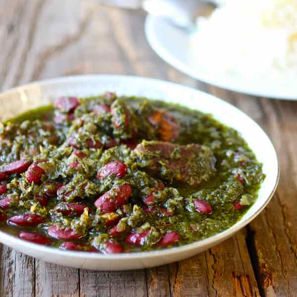

Khoreshte Ghorme Sabzi
INGREDIENTS
- 2 lb lamb or beef stew meat , cubed
- 1 cup red kidney beans ,soaked overnight
- 1 onion , finely chopped
- 4 bunches parsley
- 1 bunch cilantro
- 4 scallions (green stems only)
- 1 tablespoon dried fenugreek (or 1 bunch fresh fenugreek)
- 4 dried black limes (limoo amani) , or 4 tablespoons lemon juice
- 1 tablespoon turmeric
- Vegetable oil
- Salt
- Pepper

INSTRUCTIONS
- Wash the herbs in a large bowl, then dry and chop finely.
- In a large skillet, heat 4 tablespoons vegetable oil over medium heat and sauté the fresh herbs for about 15 minutes, while stirring occasionally. Set aside.
- In a Dutch oven or a large pot, sauté the chopped onions in 2 tablespoons of oil for about 10 minutes, until golden brown.
- Add the meat, turmeric, salt, pepper to the onions and fry for about 6 to 8 minutes.
- Add the soaked dried beans, the fried herbs and the black limes.
- Cover with water and bring to a boil on high heat. Then, lower the heat, cover and simmer on low to medium heat for about 2 hours.
- Taste and add salt or pepper if needed. Add water and continue to simmer if the meat is not tender enough.
- Serve over Persian steamed rice.